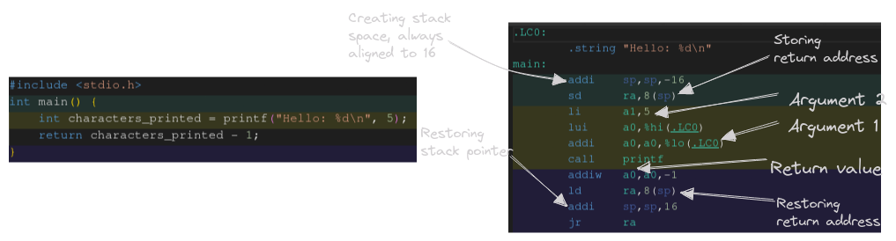
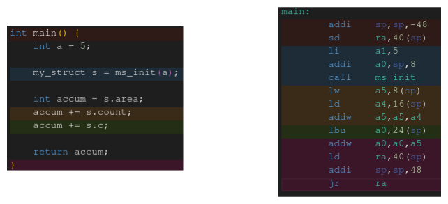
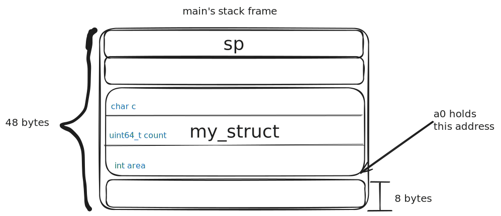
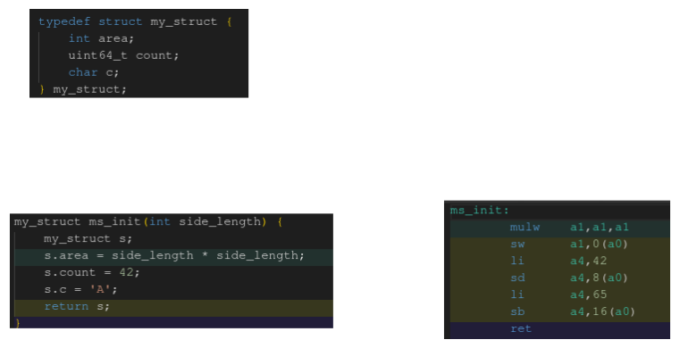
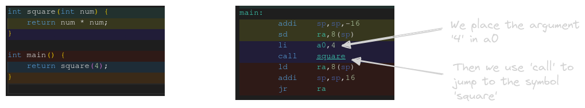

Exploring the RISC-V ABI on Linux
Introduction
We are going to take a break from systems programming in C to explore how processors run our programs, specifically a RISC-V processor running Linux. Without diving too far into the philosophy of RISC-V, it is an entirely open architecture which has been gaining popularity since its introduction in 2014. This is the architecture we study at University of Tennessee for our Computer Organization class, which focuses on how computers work at a hardware level, and the lowest levels of software that sit on top of that hardware.
The concepts discussed here may not transfer directly to other operating systems or architectures, but most of the fundamentals will stay the same. The most important thing to understand here, is that compilers generate assembly and/or machine code, which interacts directly with the CPU. Gaining a better understanding of what instructions are generated from the high-level code that you write will help you write better software.
We will be using compiler explorer, which allows us to view the assembly generated from C code in a much more organized manner.
Register Conventions
There are 5 types of registers that we need to be concerned with when writing and read assembly. Each has its own purpose, and you need to be careful how they’re used/saved throughout your code.
Temporary Registers
| Register Number | x5-x7, x28-x31 |
| ABI Names | t0-t6 |
The name says it all for these registers. They are entirely volatile and are not guaranteed to hold that same value across function calls. They can be used to hold intermediate values in arithmetic, or any other value you need to store temporarily.
This means that you are free to use them anywhere in your code without worrying about first preserving their value.
Function Argument Registers
| Register Number | x10-x17 |
| ABI Names | a0-a7 |
Function argument, or argument registers are used to both pass arguments to functions, and to receive return values. The first 8 values can be passed in these registers, with remaining values needing to be passed on the stack. These registers are not saved across function calls, so if a value is needed both before and after a function call it should be placed either on the stack or in a saved register.
These registers also be used as temporary registers for intermediate values in your program.
Saved Registers
| Register Number | x9, x18-x27 |
| ABI Names | s0-s11 |
Saved registers allow a value to be preserved across function calls, but there is one catch. If you plan to use a saved register you also have to save its value. This is why the return address is simply stored on the stack and not in a saved register. If we were to put the return address in s0, we would first have to put the original value of s0 on the stack.
For small functions it may not be worth the cost to allocate stack space to preserve the values of saved registers, but for larger functions they can save plenty of time. Instead of accessing a value on the stack numerous times, we can place it in a saved register so that it can be accessed instantly. Always remember to store any saved registers on the stack, and restore their values before returning from your function.
Stack Pointer
| Register Number | x2 |
| ABI Name | sp |
This register holds the memory address of the bottom of the stack. When we want to allocate more space on the stack we subtract a multiple of 16 from sp. It is vital that this value is restored to its original state before returning or exiting from a function.
Values can be “pushed/popped” off of the stack using load and store instructions. Even though we think about operations on a stack only being able to interact with the topmost item, we can access values anywhere on this stack. Load instructions take a destination register, a register holding the source memory address, and an immediate value which is used as an offset from the source address. Store operations work in reverse using the first register as the source. With these operations we can read/store values anywhere on the stack.
Return Address
| Register Number | x1 |
| ABI Name | ra |
The final register we are going to cover is the return address. This register holds the address of instruction that we should “jump” to once our function is done executing. This holds the address of the call instruction, so that once execution returns here, we increment the pc and continue on.
If you plan to call any functions within your function it is important to store this value on the stack so that it can be safely restored before you return.
Calling Functions
When you call a function in any higher level language it looks very simple. The arguments are passed within the parentheses, and if it returns a value you place that on the left-hand side of the equals sign. What is the computer doing to make this all work? This is the core of what is called calling conventions, which is an agreement between the hardware and the software that runs on it. A calling convention defines what registers (or stack space) should be used for function arguments, and where the return value(s) should be placed.
Calling conventions are different for each hardware architecture, but many of the concepts stay the same. We prefer to pass arguments in registers if available, because they are much faster than reading from main memory, or even cache. They also define how specific registers are used, s registers are callee saved, the return address is volatile, and how the stack should be set up and torn down.
When a function is called on a RISC-V CPU there are a few things that need to be set up.

- Move the stack pointer, making sure to keep it aligned to 16 byte increments
- Store the current return address on the stack
- Prepare function arguments in registers
- If the function returns a struct its address should be allocated on the stack, then passed in
a0 - Remaining function arguments (up to 8) are passed left-to-right in the next available
aregisters - Floating point arguments can also be passed left-to-right in
faregisters
- If the function returns a struct its address should be allocated on the stack, then passed in
- Use the
callpseudoinstruction to call a function be either its label or memory address- The address of the current instruction,
call, will be placed in the return address register - Once the callee returns control flow will return to the next instruction
- The address of the current instruction,
- If the function returns a scalar value it will be placed in
a0, with a floating point scalar being placed infa0- Struct return values will be in the position previously allocated for them
- Perform any other work needed
- Once the current function is ready to exit it loads its original return address back off the stack
- The stack is then moved back to its original position
- If your function does anything with the stack it must be returned to the exact same position before you may return
- The functions return value is loaded into the appropriate register
- Finally, we jump to the return address
This example follows these exact steps in order to call any another function. As long as every function follows these exact conventions it will be able to call any other function without issue. Think about it like the rules of driving, as long as everyone stays on their side of the road, and follows traffic lights we shouldn’t have any issues.
But there are some cases where you may want to break these rules for speed or simplicity. If you’re writing assembly by hand nothing says you have to follow these calling conventions. In fact, if you’re only going to call other functions that you wrote yourself you can ignore any or all of these rules.
Having said that, the calling conventions do ensure software works together, so unless you really know what you’re doing, it’s best to stick to it.
Returning a Struct
When a function returns a struct, it writes the fields of the struct directly onto the stack from of that function it was called from (note: simple structs may discard the concept of a struct entirely, returning values directly in registers). So, constructors and initialization functions do not perform extra work by first creating a struct, and then copying it back to the caller.

Let’s start by looking at main for this example. The first section in red sets up our stack, storing our return address for later. The value 5 is then loaded in register a1, which is the first and only argument to the function ms_init. The compiler then moves the value sp + 8 into a0. Why would we care about a value 8 bytes after the stack pointer?

Like we said before, functions that return structs write their fields directly onto the stack. So by moving the value sp + 8 into a0 we give the address of the struct to the function. It is important to note that when returning structs, their address takes priority over function arguments, and thus will be placed before them. Now we can see what ms_init does with these values.

The first step is to find the square of side_length, which is easily accomplished by calling the “w” version of mul. This value is stored back into a1 which we then write to a0 + 0, the address of the return struct. The first field in a struct is at the same address as the struct itself. Both the remaining fields are filled with constant values that are first loaded into a4, then written 8 and 16 bytes after the address in a0 respectively. Finally, the function returns.
Back in main the values are on the stack exactly like we expected. We then load area into a5 by loading a word from sp + 8, which is where we asked the struct to be stored. The 64-bit value is then loaded into a4 and the 2 are added together. The last field is then fetched with lbu, which stands for load byte unsigned, 0 extending the 8-bit value to 32-bits. Finally, it is added to accumulator, which we conveniently store in a0, the return register in the calling convention.
The last step is to restore the return address from the stack, move the stack back to its original position, and jump to the address held in ra.
There we go! If you are ever confused as to how structs are returned hopefully this helps explain.
Calling a Function Pointer
If you’ve ever worked with function pointers you probably know they can be confusing to write in C/C++. This is one of the concepts I think is actually easier in assembly than in C, which is probably an odd thing to say.
When we call a function using call all we are really doing is jumping to its address in memory. If you know about any of the jump instructions, that probably sounds familiar. Let’s see how function pointers translate to assembly.

Our first step is to load the memory address of the function in a register, in this case a5. Then we prepare our argument and finally call jalr, which jumps to program counter to the address held in its argument register.
Contrast this with calling the function by name, which produces a call instruction in the assembly.

These may look like they’re doing very different things, but call and jalr are more closely related than you might think. Both call and jalr are commonly referred to as pseudoinstructions, meaning that assembler will generate a different set of instructions when it sees either of these 2. But what does it generate?
Well, a jalr instruction with a single register will turn into jalr ra, rs, 0, which means, add 0 to the ra register, then jump to the address in rs. The reason this code is generated is so that when the called function returns, we return to this exact location, then increment the pc and continue on. Pretty simple right? Just like we would call another other function on our RISC-V machine.
On the other hand, a call instruction can do nearly the exact same thing with one distinct advantage, it can jump to labels directly, without having to first store the value in a register. This is because once the program is compiled down, a call instruction generates aiupc t1, 20-bit value and jalr ra, t1, 12-bit value. A lot more code that has to get generated, luckily you won’t have to write it yourself.
All this to say that calling a function by name/label, and jumping to an address held in a register (function pointer) are no different at the end of the day. You may even find function pointers easier to understand in assembly than you do in C/C++.